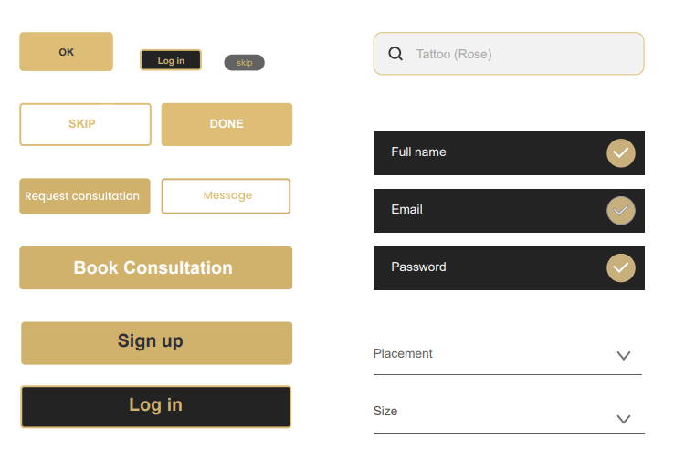

Overview
Problem & Scope
A massive 36% of 18-25 year old's and 40% of 26-40 year old's in the U.S have at least one tattoo.
More people than we think have tattoos lurking beneath shirt collars, long hair, and strategically
selected sleeves and socks. Considering the size of the tattoo industry, there's relatively little focus on
this target audience from a design and technology standpoint. There are a few competitors, but
neither seem to address the complexity and emotional element of finding the right design and tattoo
artist.
For ( The objective of) this project, I'll explore ways to pick apart an interesting and relatively
unexplored problem space and design a better solution for target audience through research,
analysis, and best practices in UX design.User-centered Design (UCD) framework to design a tattoo
Summary
The goal here is to design content for a user to enjoy and to make sure that steps leading them up to their first appointment with a tattoo artist is easy and efficient.
I am using Google's 'Heart Framework' to measure the quality of user
experience.
1. Happiness - Using surveys to measure the user's attitudes and satisfaction.
2. Task Success - Conducting usability tests to measure how easily users can accomplish what they set to do.
Entire product design from research to conception, visualization and testing
3 months
Approach
RESEARCH
Competitive Analysis
I looked into the market to identify unserved opportunities and develop a marketing strategy. I have taken 2 competitors, Tattoodo app (direct competitor) and Pinterest app (indirect competitor). From online research, I learnt that many users use Pinterest to find ideas for their tattoos. Pinterest is popularly known for finding and saving ideas from around the world and tattoo is one of their category.
SEE DETAILED ANALYSIS
HIDE DETAILED ANALYSIS
I found that -
1. Tattoodo apps lack personalization. I can use AI (Artificial intelligence) to provide personalized
search result. To show images similar to their likings (using there clicks and likes).
2. Human-centric designs is the key to long-lasting client relationships. If we look into Marketing profile
of Tattoodo app it's mostly concentrating towards promoting tattoo artists and getting bookings. I
would focus on providing usability and utility for the users, making it easier for them to benefit from
the app, and then direct them towards the booking.
3. Pinterest is popular and amazing, but it's not a tattoo oriented app so we have an advantage here.
4. UI on Pinterest is not gender-neutral. 70% of Pinterest users are females.
Interviews and Surveys
Research Goals
I used survey to understand who our users are (demographics) and get more reliable information.
1. Uncover what users want from a 'tattoo app'. (Interview questions 3,5 & 7)
2. The general thoughts, attitude and goals of the person getting a tattoo. ( Interview questions 1 & 6 )
3. Learn about people's previous experiences getting a tattoo. ( Interview questions 2 & 4)
I conducted this survey on SurveyMonkey.
I shared it among my friends on WhatsApp. I was happy to get 14 participants with tattoos.
They are from different locations like Sweden, Germany, the UK, Bahrain and India. In future, I would
aim to get wider range of participants
DETAILED SURVEY AND INSIGHTS
I conducted Interview on 3 participants. On taking permission on the phone, I went to a tattoo shop and got one kind customers to participate in the interview. two other participants were my friends who have a couple of tattoos.
Link to download Pdf of interview script, questions and answers documented.
Findings from interviews and surveys
Affinity mapping
To analyze user's needs and pain points from the interview, I combed through the data and paid attention to following four findings.
1. Behaviors and attitudes that would inform answers to the research goals.
2. Picked out Needs and goals the participants mentioned.
3. Record participants frustrations.
4. Any other facts or quotes that align to my research goals.
Clustering similar notes that share a particular theme and gather insights from it. Conducted a few rounds of affinity mapping to get a good set of perspectives from the data.
I decided to skip personas for this project and jump directly to user flow. Personas are great to add life/human element to the list of insights extracted from affinity mapping. But I feel that the raw data gets diluted when adding a lot of assumptions. I can make a better design decision based on real data from real users. Also, I can easily empathize with the data as they are from real users.
IDEATE / DESIGN
User flow
Below are 3 user flows that focuses on steps/tasks leading up to booking an appointment
corresponding with the goal set at the beginning of the project.
Goal of the project- The goal here is to design content for a user to enjoy and to make sure that steps
leading them up to their 1st appointment is easy and efficient.
That is a user looking for images of tattoos, saving and sharing the image, and communicating with a
tattoo artist. User stories with clearly defined entry points and success criteria for each task.
User looking for design.
As a tattoo enthusiast, I need to find a suitable design of my liking so that I am happy with the design and can proceed to get it inked.
Finding a tattoo image.
User looking for images of tattoos
Opening app.
As a person getting a tattoo, I need to find a tattoo artist and communicate so that I can discuss the design, cost, etc., to see that we are on the same page.
Find tattoo artist and communicate with them.
User communicating with a tattoo artist.
Main page
As a user, I need to be able to save and share the tattoo images to my close ones so that I can get their opinions on it, which is very important for me.
Able to save and share the liked images.

User saving and sharing the image.
Sketches and Wireframes
Filter feature corresponding to 1st user story
Message feature corresponding to 2nd user story
Filter feature corresponding to 1st user story
Hi-fi Wireframes and Prototype
EVALUATE & ITERATIONS
Usability test
I conducted usability tests to evaluate what people said and their action when interacting with the product. Observed where participants got confused or made wrong choices, took notes, and then implemented steps to correct the issues.
I conducted Moderated in-person tests. Users were given a specific set of tasks to complete, and the efficiency and ease with which they completed them were recorded
Link to Usability Test Script
Similar to affinity mapping I did earlier, I combed through the audio recording and notes to extract information into the following categories, Observations, Positive Quotes, Negative Quotes, and Errors. Each participant is labelled from P1, P2 and P6. I ended up with 20-25 core observations that I followed up on using 'Rainbow Spreadsheet'. I am using Rainbow spreadsheet to stack these observations based on severity and priority and hypothetically it's easier to present it to the stakeholders .
The Rainbow Spreadsheet
This Spreadsheet is setup by assigning each participant with color and adding it to the columns. Rows are entered with observations from the affinity map. On the intersection, I input 'severity of errors' ranking them according to Jakob Nielsen's four-step rating scale from 0 to 4.
One framework for examining usability is Jakob Nielsen's Five Components on Usability, which covers learnability, efficiency, memorability, satisfaction, and errors. I mainly focused on errors to measure 'task success' as it is one of our design metrics. Secondly, to measure satisfaction, I followed up with a survey to obtain user satisfaction score.
Possible Solutions
After conducting usability tests and analyzing the results, I made some changes accordingly. I worked on the negative feedback to produce solutions aligning to the goal of the project.
This aligns with our goal, by providing a detailed review, we make it easier for the user to judge/trust an artist. This, in turn, increases the chances of the user booking an appointment
Below are the few changes I made to fix remaining errors and improve the usability and utility of the app
Onboarding
I replaced 3 onboarding page that explains what our product does to 1 onboarding page to learn about our user. I'll guide them with instructions as and when they are using the app. Instead I used this page to add personalization and learn about their interests to provide personalized feed.
User intent boarding (Learnt from growth the design) "If we want a successful user. we need to understand why the user came for. Generic goals won't cut it."
Call to action (CTA)
Since the end goal of the app is for the user to book an appointment with a tattoo artist through the app. On the artists' page, I replace the 'message' icon with "Book an appointment" to have a clear CTA.
Accessibility
Wordings (Tile below the image) added to explain the context of the image. Previously I had options (like and share) to appear on the image upon hovering on it. Now, these options are static.
Similarly, I went through all the functionalities/user flow of the application to make sure I follow A, AA, or AAA compliance mentioned in WCAG guidelines. I checked the color contrast ratio of the app on an accessibility test website.
Search
Boosting User Engagement
Notification
Survey
I wanted to test this updated / iterated prototype. I shared it among my fellow designers to gather feedback on my work and also asked them to complete a survey at the end of it. That will help me learn their overall experience using the prototype of the app.
I conducted this survey with 6 participants. Each rating how easy was it for them to complete the task using the product, overall experience using the product and how likely are they to recommend it to their friends and family.
It was clear to say that it was easy for them to complete the task, and the over all experience is 50% which is still a positive response.
LATEST PROTOTYPE
Below is the latest prototype with some of my updated changes
FUTURE IMPROVEMENTS
1. Uptill now, I have designed the steps for the user to use our app and lead them 'book an
appointment' on an app, with a tattoo artist. As that was the goal of the project and the application. My
future steps would be to design the steps for the user after they book an appointment, on the app.
One example is adding the appointment to their calendar, and reminding them of the appointment.
Asking the user's experience (review) after their appointment.
2. I would like to conduct another round of test on my iterated application and obtain data from the feedback.
DESIGN DOCUMENTATION
UI Elements & Styles

Do and Don'ts
Don't resize icons or images making them stretched or skewed this distorts them creating uneven dimensions.
Use recurring elements, don't create new ones if unnecessary, follow patterns to insure consistent design.
Language
language is easy to understand and follow along.